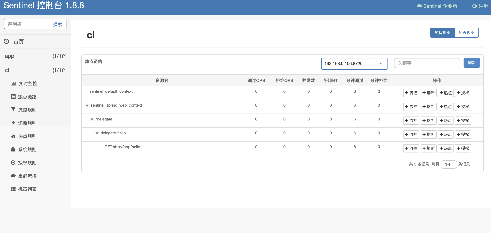
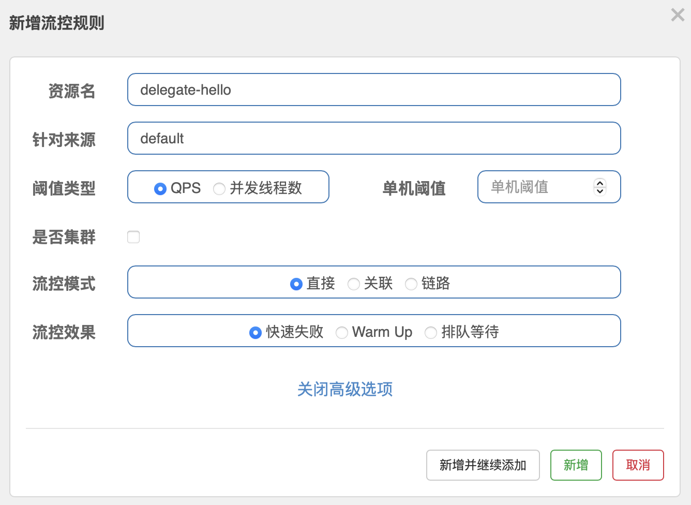

中间件速成 Ch26 Sentinel
Sentinel 是阿里巴巴开源的一款流量控制、熔断降级的 Java 中间件，它提供了一套完整的流量控制方案，包括流量控制、熔断降级、系统负载保护等功能。Sentinel 通过实时的监控系统的运行状态，对系统的流量进行实时的监控，当系统的流量超过了预设的阈值时，Sentinel 会对流量进行控制，保护系统的稳定运行。
相比 Resilience4j，Sentinel 提供了更多的流量控制策略，包括流量控制、熔断降级、系统负载保护等功能。Sentinel 通过实时的监控系统的运行状态，对系统的流量进行实时的监控，当系统的流量超过了预设的阈值时，Sentinel 会对流量进行控制，保护系统的稳定运行。
Sentinel 的保护策略
Sentiel 保护策略如下。对于用户可以访问的每个资源，可以提供若干规则，例如流量控制，服务降级等。如果违反规则，则会抛出异常，进行 Fallback。否则直接放行。
可以看出，Sentinel 保护有三个关键点：定义资源，定义规则，Fallback 逻辑。
Sentinel 使用
首先启动 Sentinel 的 Dashboard，这里需要在这里获取 jar 包，直接启动即可。默认账号与密码都是 Sentinel。
然后引入 Sentinel。此外为了演示，我们还引入 OpenFeign。Sentinel 有 OpenFeign 的集成，可以直接使用。
implementation 'org.springframework.cloud:spring-cloud-starter-openfeign:4.2.0'
implementation 'com.alibaba.cloud:spring-cloud-starter-alibaba-sentinel:2023.0.3.2'
implementation 'org.springframework.cloud:spring-cloud-starter-loadbalancer:4.2.0'
现在我们再创建一个微服务，让新的微服务调用之前的微服务。这里我们使用 OpenFeign 来调用。
package com.github.fingerbone;
import org.springframework.cloud.openfeign.FeignClient;
import org.springframework.web.bind.annotation.GetMapping;
@FeignClient(value = "app")
public interface TestClient {
@GetMapping("/hello")
public String hello();
}
package com.github.fingerbone;
import org.springframework.beans.factory.annotation.Autowired;
import org.springframework.web.bind.annotation.RestController;
import org.springframework.web.bind.annotation.GetMapping;
@RestController
public class TestController {
@Autowired
private TestClient testClient;
@GetMapping("/delegate")
public String delegateHello() {
return testClient.hello();
}
}
现在直接启动即可。注意，Sentinel 是懒加载的，所以需要访问一次才能在 Dashboard 上看到。当然，也可以在配置文件中开启 eager 模式。此外还要配置 spring.cloud.sentinel.transport.dashboard 来指定 Dashboard 的地址。
spring:
cloud:
sentinel:
transport:
dashboard: localhost:8080
eager: true
此外，还要开启 Sentinel 的 Feign 整合。
feign:
sentinel:
enabled: true
发送几个请求，然后就可以在 Dashboard 上看到了。
默认情况下，Sentinel 会把每一个 Web Endpoint 作为一个资源。如果开启了 Feign 整合，那么 Feign 的调用。
此外，还可以通过向方法上添加 @SentinelResource 注解来定义资源。注意，每一个有 @SentinelResource 注解的方法都会被 Sentinel 保护。
@SentinelResource(value = "hello")
然后就可以直接在 Dashboard 上看到定义的资源。

不过注意，@SentinelResouce 注解应该加在非 Web Endpoint 的方法上，例如 Service 层的方法。
如果一个资源获取了另一个资源，在 Dashboard 上会有调用链的显示。
Sentinel Fallback 机制
Sentinel 在触发时，会抛出 BlockException 异常。有四种情况来处理这个异常。
Web 接口错误处理
Sentinel 会调用 BlockExceptionHandler 来处理异常。可以通过实现 BlockExceptionHandler 接口来自定义异常处理。
public class CustomBlockExceptionHandler implements BlockExceptionHandler {
@Override
public void handle(
HttpServletRequest request,
HttpServletResponse response,
String resouceName,
BlockException e) throws Exception {
response.setStatus(429);
response.getWriter().write("Too many requests");
}
}
@SentinelResource Fallback
对于 SentinelResouce 的 Fallback，可以通过 fallback 属性来指定 Fallback 方法。注意，还有一个参数 blockHandler，它的功能与 fallback 类似，但是它更优先。
@SentinelResource(value = "hello", fallback = "fallback", blockHandler = "blockHandler")
public String hello() {
return "Hello";
}
public String fallback(Throwable e) {
return "Fallback";
}
public String blockHandler(BlockException e) {
return "BlockHandler";
}
Fallback 或 BlockHandler 的函数参数比原本的函数多一个参数，即对应的 Exception。
当一个异常被抛出，如果是 BlockException，即 Sentinel 触发，那么会调用 BlockHandler，如果没有 BlockHandler，那么会调用 Fallback。如果没有 Fallback，那么会直接抛出异常到 Spring 全局异常处理器。
如果是其它类型的异常，会直接走 Fallback。
OpenFeign Fallback
OpenFeign Fallback 走的是 OpenFeign 的 Fallback 返回，例如，
package com.github.fingerbone;
import org.springframework.cloud.openfeign.FeignClient;
import org.springframework.web.bind.annotation.GetMapping;
@FeignClient(value = "app", fallback = TestClientFallback.class)
public interface TestClient {
@GetMapping("/hello")
public String hello();
}
package com.github.fingerbone;
import org.springframework.stereotype.Component;
@Component
public class TestClientFallback implements TestClient {
@Override
public String hello() {
return "Fallback";
}
}
SphU try-catch
最后一种方法是使用 SphU 的 try-catch 方法来处理异常。事实上，Sentinel 代理了原本的方法，每次调用时，都会使用 SphU 的 try-catch 方法来处理异常。
即对于一个受保护的函数 func()，实际执行过程如下，
try {
SphU.entry("func");
func();
} catch (BlockException e) {
// Fallback
}
Sentinel 流量控制
下面介绍 Sentinel 三种基础保护机制的参数。
对于流量控制，有，

流控模式中，直接模式是指不考虑任何情况，只要访问资源的来源超过了阈值，就会触发流控。
链路策略模式要指定一个入口。只有来自入口的流量超过了阈值，才会触发流控。
使用链路模式，需要将 spring.cloud.sentinel.web-context-unify 设置为 false。否则，Sentinel 不会将不同 WebEndpoint 调用的同一个 Service 分列开。
最后是关联策略。关联策略的使用场景是写频繁时对读限流，没有写时对读不限流。关联模式可以指定一个关联的资源，只有关联的资源超过了阈值，自己也超过了阈值，才会触发流控。
此外还有三种流控效果，
快速失败模式是指只要触发流控，直接拒绝服务。
Warm Up 模式有一个额外的 Period 参数。在 Period 时间内，流量逐渐增加，直到达到阈值。增加是线性的，冷状态是 QPS / Period 个请求，之后秒增加到 QPS 个请求。
排队等待模式是指当流量超过阈值时，不直接拒绝服务，而是排队等待。这个模式需要指定一个等待时间 timeout，如果等待时间超过了，就会拒绝服务。
Sentinel 熔断降级
熔断的作用是切断不稳定的调用链，使得某个服务快速 Fallback，以避免服务雪崩。否在，单个服务的不稳定可能会被放大导致整个系统的崩溃。
熔断降级用于远程调用部分，这里的原理已经在 Resilience4j 部分介绍过了，关于慢调用，异常比例，异常数等。
Sentinel 热点参数限流
这一功能适用于对于某个访问频繁的参数，例如大卖的某个商品 ID，对于这个商品 ID 的访问频率超过了阈值，就会触发热点参数限流。这属于流量控制的更细粒度的控制，可以控制只对某个参数进行限流。